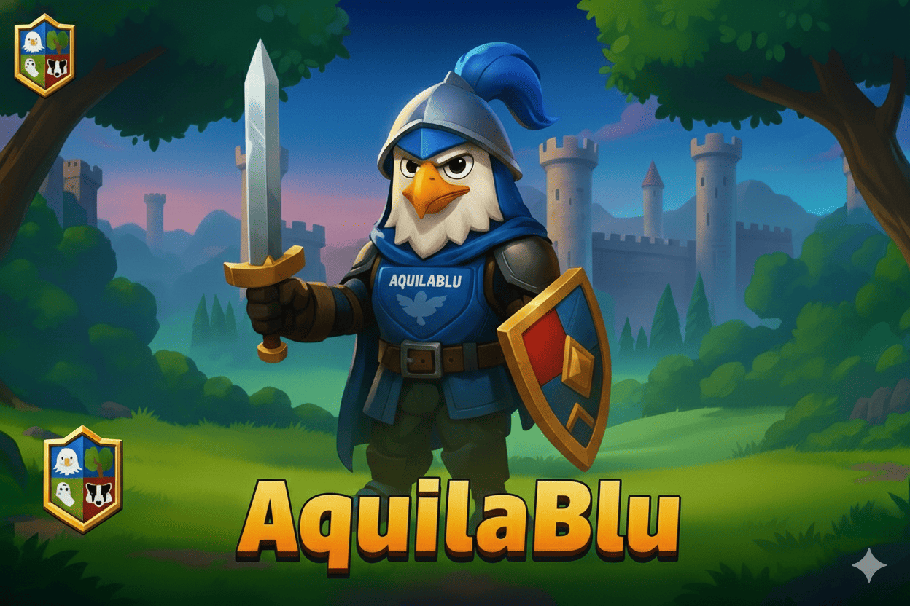
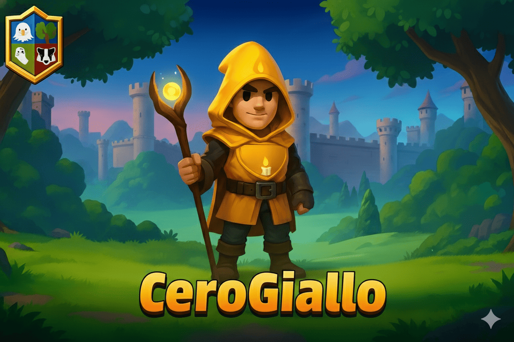
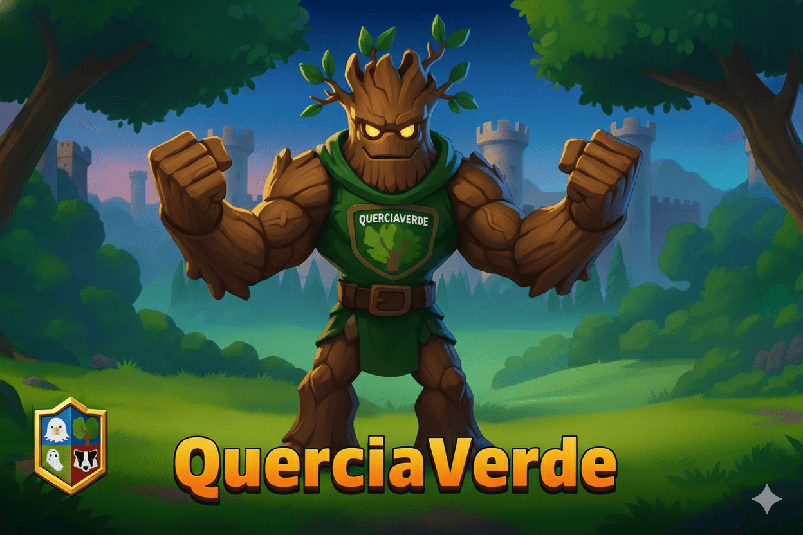
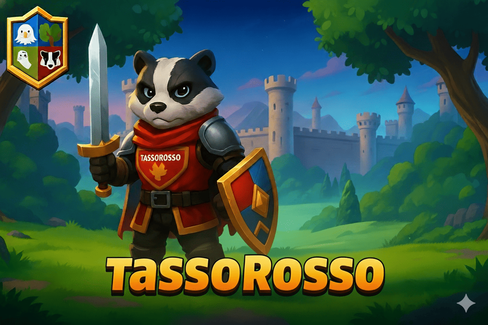

Le quattro case della scuola si sfidano nel cortile, sul campo da basket ricostruito in 3D. Ogni gioco è a misura di classe: si ragiona, si impara, si fa il tifo.




Due case, una scacchiera gigante al centro del campo. Regole ufficiali complete e pezzi con il volto delle mascotte.
GiocaLe quattro case girano per i luoghi veri del campus: si comprano rispondendo bene ai quesiti di tutte le materie.
GiocaIl Custode del Cortile ha nascosto un tesoro: sette enigmi tra canestri, tettoia e prato, da risolvere tutti insieme esplorando il cortile in 3D.
Gioca